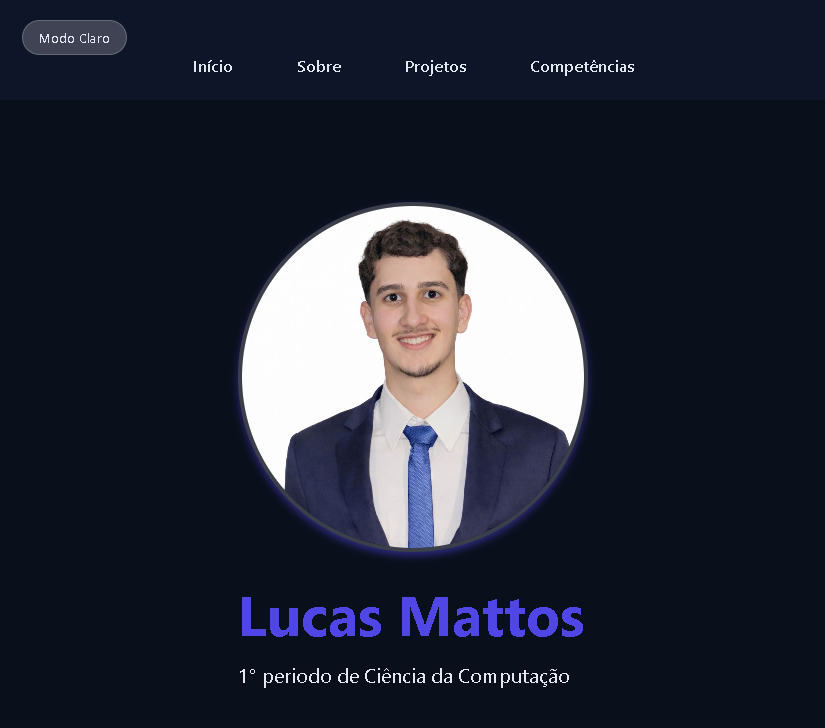
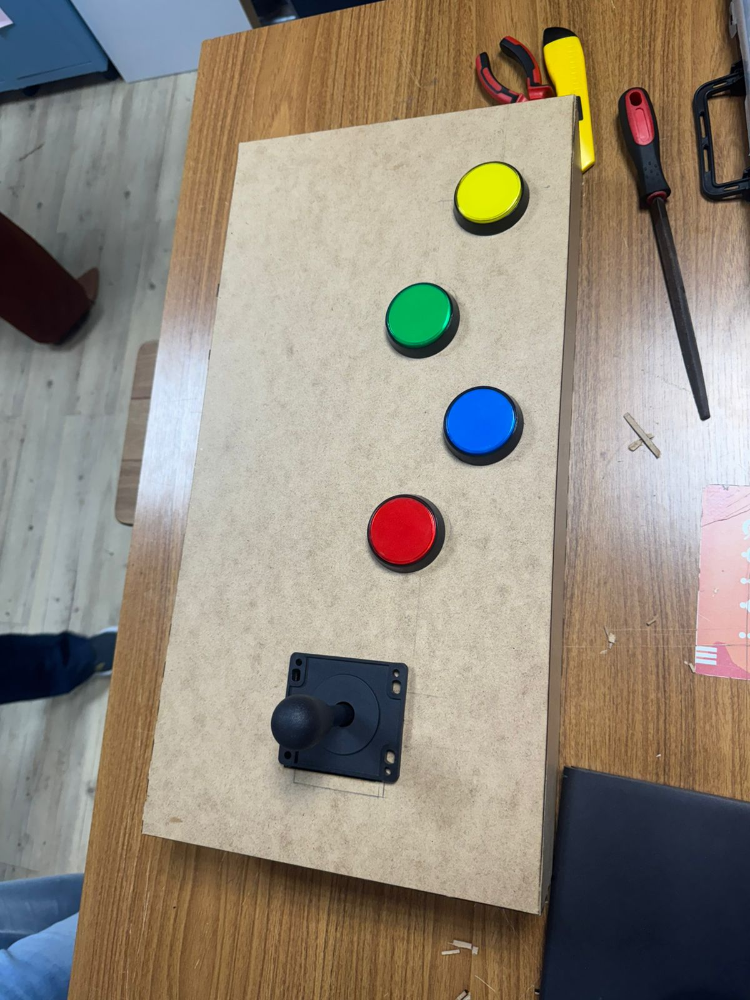

Lucas Mattos
1° período de Ciência da Computação
1° período de Ciência da Computação
Olá! Me chamo Lucas Mattos e sou estudante do primeiro período de Ciência da Computação na CESAR School. Sempre fui apaixonado por inovação e movido pela curiosidade no mundo da tecnologia. Aos 18 anos, já estou profundamente imerso na área, buscando aprender na prática e contribuir de forma proativa para gerar resultados de impacto. Minhas experiências fora da tela do computador me deram uma base ética e comportamental muito forte. Anos de dedicação ao esporte competitivo e o envolvimento com a diversidade coletiva me ensinaram, na prática, o valor da disciplina, da diligência e da responsabilidade. Sou movido pela comunicação e pelo trabalho em equipe; sei seguir orientações com excelência e não economizo esforços para entregar sempre o meu melhor.

Desenvolvi um site de portfólio para mostrar meus projetos e habilidades. O site é responsivo e foi criado usando HTML, CSS e JavaScript.
Visitar projeto